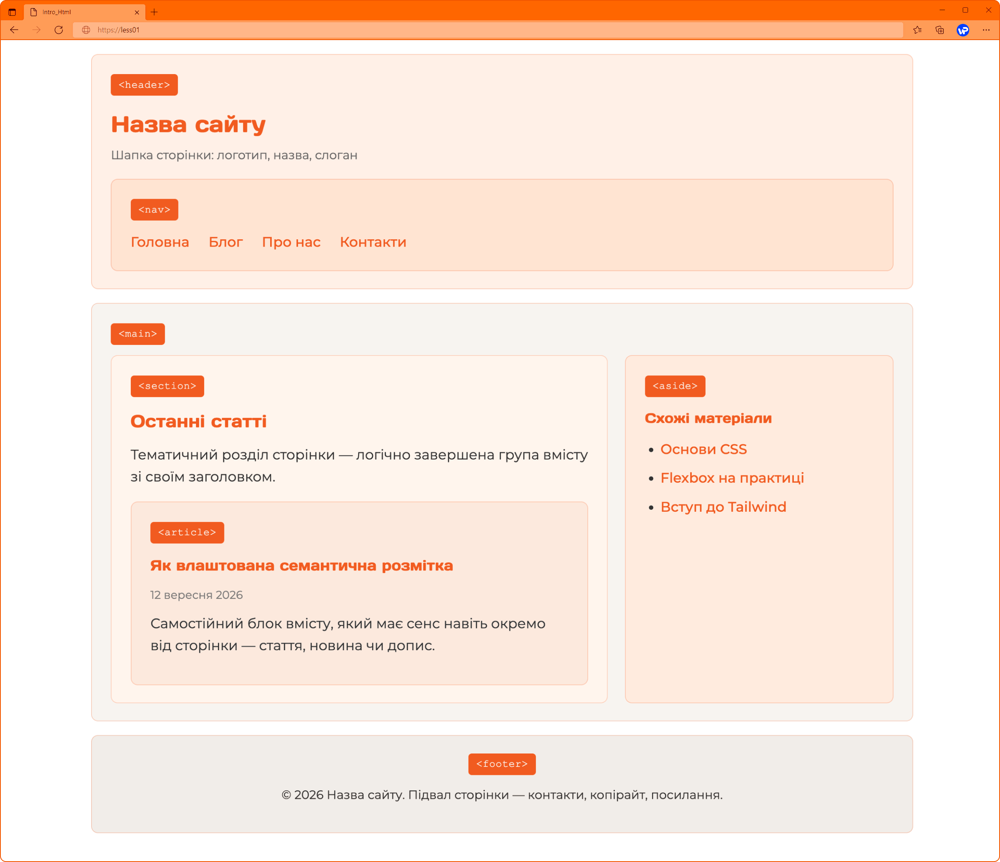

Семантична розмітка HTML5
Спочатку HTML сторінки будували із заголовків, абзаців, якщо це були складніші структури зверталися до таблиць, і браузер відображав їх коректно. Але з погляду структури сторінка складалась із «безликих» елементів - браузер бачив лише текст, а не логічні частини сторінки: де шапка сайту, де меню, а де основний вміст.
HTML5 вирішує цю проблему за допомогою семантичних тегів - елементів, назва яких одразу повідомляє про роль блоку на сторінці. Це корисно одразу з трьох причин: пошукові системи краще розуміють вміст сторінки (SEO), програми для людей із вадами зору коректно озвучують структуру сторінки (доступність), а самому розробнику простіше читати чужий код.
Структура сторінки: до і після.
Раніше розробники позначали всі блоки одним і тим самим тегом div, а щоб не заплутатись - додавали атрибут class з описовою назвою:
<div class="header">...</div>
<div class="nav" >... </div >
<div class="main" >... </div >
<div class="footer" >... </div >
Браузер тут бачить лише чотири однакові теги div - про їхнє призначення він дізнається тільки з класів, які сам не «розуміє», а лише зберігає. У HTML5 замість цього використовують теги, які самі по собі несуть значення:
<header>...</header>
<nav>...</nav>
<main>...</main>
<footer>...</footer>
Тег <header>.
Елемент <header> позначає шапку сторінки або окремого розділу. Найчастіше в ньому розміщують логотип, назву сайту та головне меню навігації.
<header>
<h1>Назва сайту</h1>
</header>
Тег <nav>.
Елемент <nav> позначає блок навігаційних посилань - головне меню сайту, «хлібні крихти» чи пагінацію. Важливо: не кожне посилання на сторінці варто загортати в nav - лише ті, що утворюють саме навігаційний блок.
<nav>
<a href="#">Головна</a>
<a href="#">Про нас</a>
<a href="#">Контакти</a>
</nav>
Тег <main>.
Елемент <main> містить основний, унікальний вміст сторінки - те, заради чого користувач на неї прийшов. На сторінці може бути лише один тег main, і в ньому не повинні повторюватись елементи, що зустрічаються на кожній сторінці сайту (як меню чи підвал).
Тег <section>.
Елемент <section> позначає тематичний розділ сторінки - логічно завершену групу вмісту, яка зазвичай має власний заголовок.
<section>
<h2>Наші послуги</h2>
<p>Опис послуг компанії...</p>
</section>
Тег <article>.
Елемент <article> позначає самостійний, завершений за змістом блок, який має сенс і поза контекстом сторінки - наприклад, новина, стаття блогу чи коментар. Головна відмінність від section: контент article можна «вирвати» зі сторінки і опублікувати окремо, і він все одно матиме сенс.
<article>
<h2>Заголовок новини</h2>
<p>Текст новини...</p>
</article>
Тег <aside>.
Елемент <aside> позначає вміст, побічний стосовно основного - бічну панель, рекламний блок, посилання на схожі статті чи цитату.
<aside>
<h3>Схожі статті</h3>
<ul>
<li><a href="#">Стаття 1</a></li>
<li><a href="#">Стаття 2</a></li>
</ul>
</aside>
Тег <footer>.
Елемент <footer> позначає підвал сторінки або розділу - зазвичай тут розміщують контактні дані, посилання на соцмережі та інформацію про авторські права.
<footer>
<p>© 2026 Мій сайт. Усі права захищені.</p>
</footer>
Повний приклад сторінки.
Наведемо приклад того, як усі ці теги працюють разом на одній сторінці:
<header>
<h1>Назва сайту</h1>
<p class="site-tag">Шапка сторінки: логотип, назва, слоган</p>
<nav>
<span class="tag-label"><nav></span>
<ul>
<li><a href="#">Головна</a></li>
<li><a href="#">Блог</a></li>
<li><a href="#">Про нас</a></li>
<li><a href="#">Контакти</a></li>
</ul>
</nav>
</header>
<main>
<div class="row">
<section>
<h2>Останні статті</h2>
<p>Тематичний розділ сторінки — логічно завершена група вмісту зі своїм заголовком.</p>
<article>
<h3>Як влаштована семантична розмітка</h3>
<p class="meta">12 вересня 2026</p>
<p>Самостійний блок вмісту, який має сенс навіть окремо від сторінки — стаття, новина чи допис.</p>
</article>
</section>
<aside>
<h3>Схожі матеріали</h3>
<ul>
<li><a href="#">Основи CSS</a></li>
<li><a href="#">Flexbox на практиці</a></li>
<li><a href="#">Вступ до Tailwind</a></li>
</ul>
</aside>
</div>
</main>

Зверніть увагу: візуально сторінка виглядає так само, як і на div-ах — семантичні теги за замовчуванням не мають спеціального оформлення (окрім display: block). Їхня цінність не в зовнішньому вигляді, а в значенні, яке вони передають браузеру, пошуковику та іншим програмам.